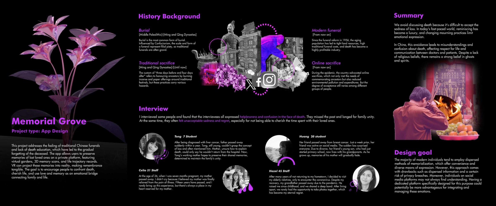
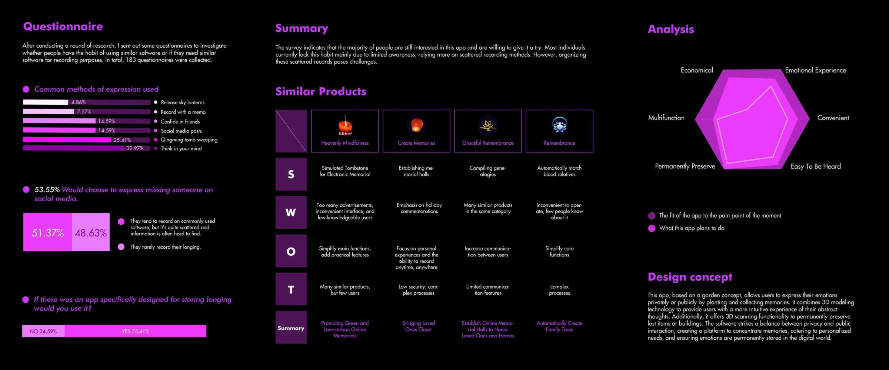
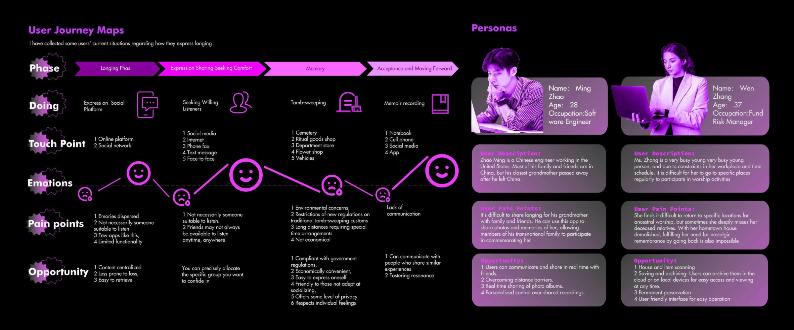
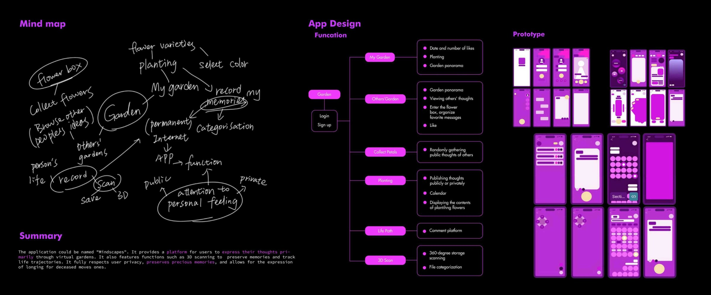
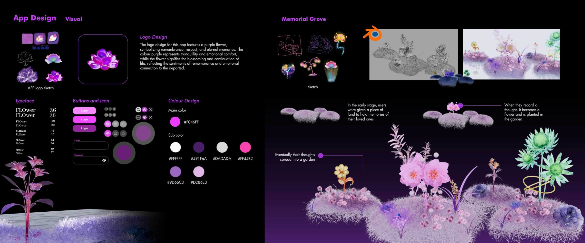
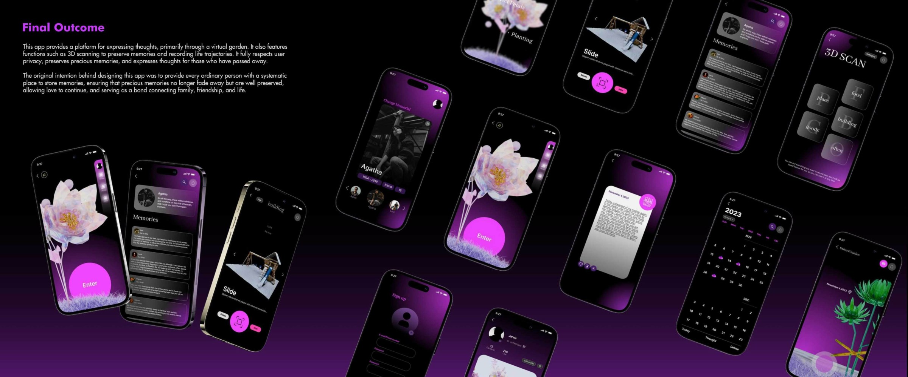
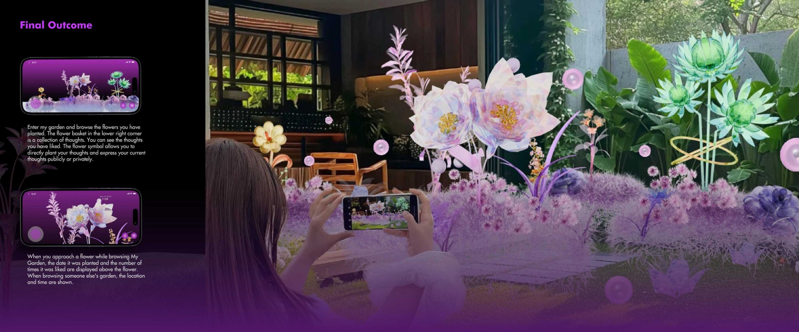

Memorial Grove
An app concept for preserving memories of loved ones through virtual gardens, personal records and shared remembrance. The project explores how digital and augmented experiences can support emotional connection.






